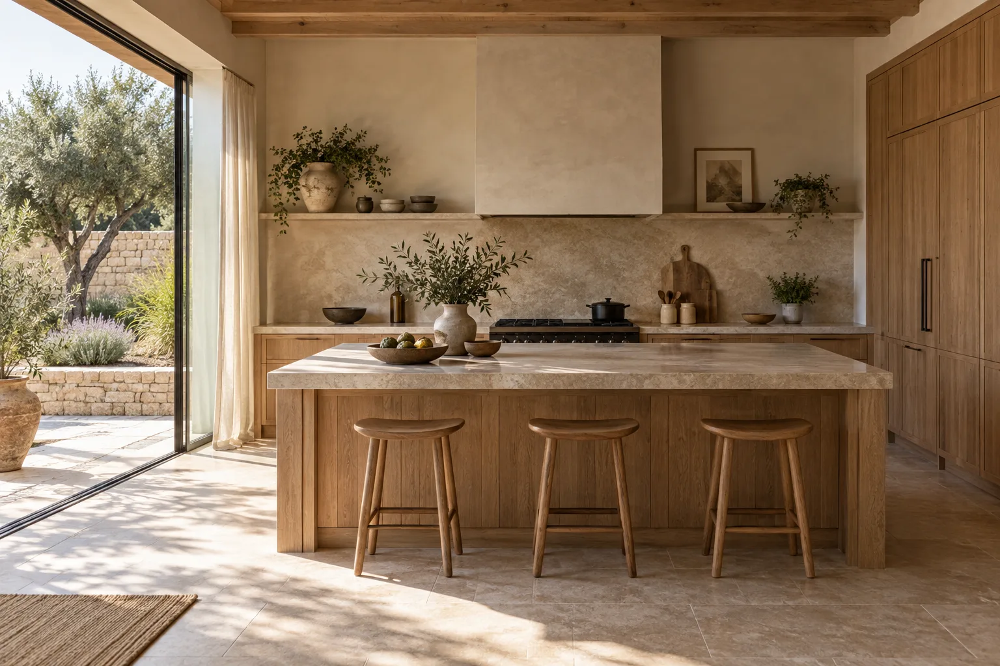

Cuisines sur mesure
Des rangements bien pensés, des matériaux chaleureux et une cuisine qui suit votre rythme.
Parlons de votre projet ↗MENUISERIE · SUR MESURE
Des matières vivantes, des lignes simples et des meubles pensés pour votre quotidien.
Parlons de votre projet ↗
L’attention au détail
Des rangements bien pensés, des matériaux chaleureux et une cuisine qui suit votre rythme.
Parlons de votre projet ↗Une pièce singulière pour accueillir vos livres, vos objets et vos histoires.
Parlons de votre projet ↗Exploiter les volumes et dessiner un intérieur cohérent, jusque dans les détails.
Parlons de votre projet ↗Passons à votre projet
E‑Vitrine peut adapter cette direction à votre activité.